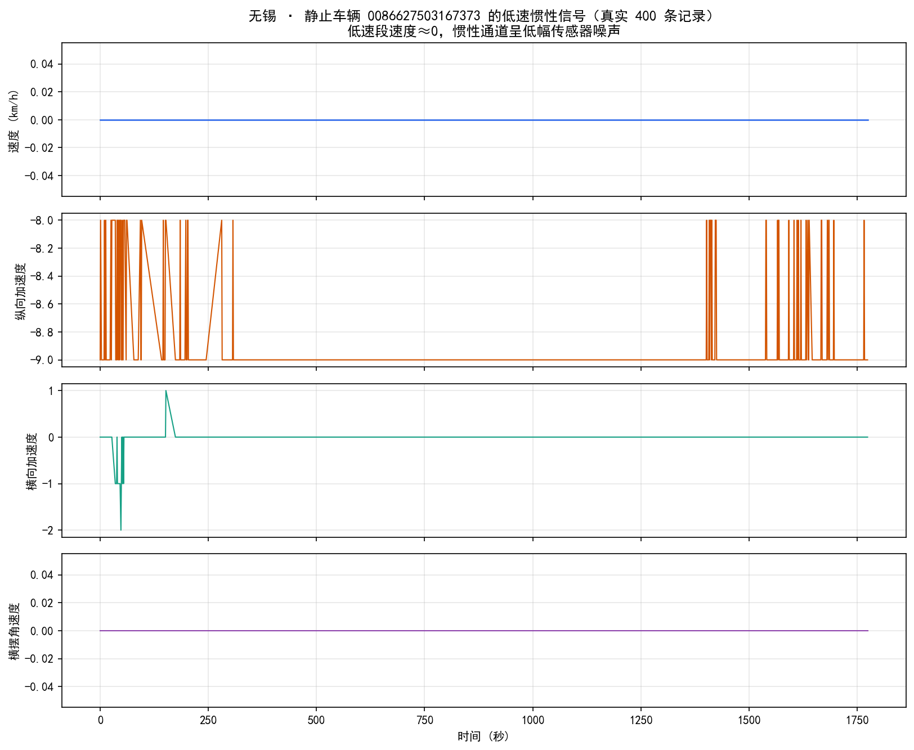

数据集 · Wuxi Floating-Car
真实数据 · 无锡 2020-07-18 一辆静止车辆（id 0086627503167373）的连续 400 条记录。速度恒为 0，纵向加速度贴近 -9，横向/垂直/横摆通道呈低幅噪声——这是"车停着、传感器还在采样"的真实样子。
无锡：最"重"的一份数据
北京给你"位置"，深圳给你"位置+载客+速度"，而无锡直接把车上的 惯性传感器（IMU）也记录了下来——除了经纬度，还有速度、纵向加速度、横向加速度、 垂直加速度、横摆角速度。一份记录不再是"车在哪儿"，而是"车在哪儿、朝哪开、加速还是刹车、 过弯猛不猛、路平不平"。这是三份数据里信息维度最高的一份。
字段数
10
含 6 个传感器量
独特信号
9 维
GPS + IMU 融合
采样间隔
30–60秒
不同设备不一
独有能力
驾驶行为
北京/深圳做不了
先搞懂：什么是"惯性信号"？
现代出租车/网约车不止有 GPS，车里还有一组叫 IMU（惯性测量单元）的传感器， 像手机的重力感应一样，能感知车辆自身的运动。GPS 只告诉你"在哪里"， IMU 告诉你"怎么动"。把两者合在一起，就从"点的轨迹"升级成"带物理状态的轨迹"。
一张图记住四个"怎么动"：前后（纵向）、左右（横向）、上下（垂直）、绕竖轴转（横摆）。
字段：10 列，每一列对应一个物理问题
无锡数据同样有表头、逗号分隔（注意首列 id 后带一个制表符，读取时要先清理）。10 个字段分两组：
① 基础定位组（和前两城同构）
- id车辆/设备 ID。注意：末尾带一个隐藏制表符，读数据要先 strip。0086627…
- 经度 / 纬度WGS-84 坐标。无锡约 119.9°–120.6°E，31.2°–31.9°N。120.578, 31.806
- 采集时间完整时间戳
YYYY-MM-DD HH:MM:SS。这次连日期都有，很省心。2020-07-18 08:00:00
② 惯性信号组（无锡独有，重点）
- 方向航向/状态编码。样本中只出现 0（停）与 121（行驶），更像状态码而非连续度数。0 / 121
- 速度瞬时速度 (km/h)。静止车≈0，行驶车常≈80。0 / 80
- 纵向加速度沿车头方向的加减速 (m/s²)。正=加速，负=刹车/滑行。静止车常见 -9（接近重力分量）。-9 / 1202
- 横向加速度过弯时产生的侧向力 (m/s²)。越大=转弯越急，反映驾驶激进程度。0–3 / 315
- 垂直加速度上下颠簸 (m/s²)。路面坑洼越大值越大，可做"路况平整度"评估。0–1 / 120
- 横摆角速度绕竖轴旋转速率 (°/s)。
📌
多出来的传感器量，能回答什么新问题？
- 急刹/急加速识别：纵向加速度绝对值突增 → 危险驾驶或突发状况
- 激进驾驶评分：横向加速度、横摆角速度的频繁高值 → 司机驾驶风格
- 路况探测：垂直加速度持续偏高 → 路段破损
真实信号长什么样？先看"静止"的车
取一辆静止的车（速度≈0），把它的四个惯性通道按时间画出来。注意它们不是平线， 而是在 0 附近小幅抖动——这正是低速时传感器自身的本底噪声：

💡
这张图教你的第一件事：看真实传感器数据，先认得"噪声长什么样"。
只有当信号明显超出本底噪声（比如横摆角速度突然飙到几百、纵向加速度猛地正负跳变），
才代表发生了真实的加速、转弯或颠簸。否则那只是传感器在"呼吸"。
真实样本：前 18 条记录（含两种"性格"）
下面逐行来自仓库 data/wuxi_sample.csv（源自 raw/wuxi/data/20200718.csv）。
注意样本里混着两类车——静止车信号微弱、行驶车信号异常"整齐"：
| 采集时间 | 方向 | 速度 | 纵向加速度 | 横向加速度 | 垂直加速度 | 横摆角速度 |
|---|---|---|---|---|---|---|
| 2020-07-18 08:00:00 | 0 | 0 | -9 | 0 | 1 | 0 |
| 2020-07-18 08:00:00 | 0 | 15 | -9 | 0 | 0 | 0 |
| 2020-07-18 08:00:00 | 121 | 80 | 1202 | 315 | 120 | 343 |
| 2020-07-18 08:00:00 | 121 | 80 | 1202 | 315 | 120 | 343 |
| 2020-07-18 08:00:00 | 0 | 10 | -9 | 0 | 1 | 0 |
| 2020-07-18 08:00:00 | 121 | 80 | 1202 | 315 | 120 | 343 |
| 2020-07-18 08:00:00 | 121 | 80 | 1202 | 315 | 120 | 343 |
| 2020-07-18 08:00:01 | 121 | 80 | 1202 | 315 | 120 | 343 |
| 2020-07-18 08:00:01 | 0 | 0 | -9 | 0 | 1 | 0 |
| 2020-07-18 08:00:01 | 121 | 80 | 1202 | 315 | 120 | 343 |
| 2020-07-18 08:00:01 | 0 | 18 | -9 | 0 | 1 | 0 |
| 2020-07-18 08:00:01 | 0 | 15 | -9 | 0 | 2 | 0 |
| 2020-07-18 08:00:01 | 121 | 80 | 1202 | 315 | 120 | 343 |
| 2020-07-18 08:00:01 | 0 | 0 | -9 | 1 | 0 | 0 |
| 2020-07-18 08:00:01 | 0 | 0 | -9 | 0 | 3 | 0 |
| 2020-07-18 08:00:01 | 121 | 80 | 1202 | 315 | 120 | 343 |
| 2020-07-18 08:00:01 | 121 | 80 | 1202 | 315 | 120 | 343 |
| 2020-07-18 08:00:01 | 121 | 80 | 1202 | 315 | 120 | 343 |
⚠️
读这张表会发现一个大问题：所有"行驶中"的车（方向=121），
五个传感器值分毫不差地相同（速度 80、纵向 1202、横向 315、垂直 120、横摆 343），
而且跨几千辆车都一模一样。真实世界里不可能每辆车以完全相同的姿态行驶——
这几乎可以断定是默认填充值/占位常量，不是真实逐条传感器测量。
所以这份数据的"9 维惯性信号"对行驶段并不可信，只有静止/低速段的微弱起伏相对可信。
这是用无锡数据做驾驶行为分析前，必须先记在心里的一条警告。
仔细看：三处"名不副实"
无锡数据标签写着"无锡"，但仔细读会发现它比标签大得多、也乱得多：
| 现象 | 真实表现 | 带来的提醒 |
|---|---|---|
| 范围远超无锡 | 抽样中 11.7% 的点落在 112°–122°E、23°–39°N——遍布大半个中国 | 这不是"无锡市"数据，更像全国浮动车探针；画无锡地图前务必按边界裁剪 |
| 行驶段信号是常量 | 方向=121 时五个传感器值全为 1202/315/120/343 | 行驶段的惯性数据不可信，别拿它算急刹/过弯 |
| 时间标签打架 | 文件夹/数据写 2020-07-18，但仓库 README 写"2022 年" | 元数据与数据本身不一致，以数据内的时间戳为准 |
🧭
方法论小结：标签是会骗人的
三份数据里，无锡最典型地说明了"数据集的名字 ≠ 数据的真实边界"。 真正的分析师不会相信文件夹名，而是用坐标范围、字段取值分布去反推"这份数据到底覆盖什么、哪些能用"。 这一步叫数据画像（profiling），永远在分析之前做。
三城对照：一份比一份"重"
| 维度 | 北京 2008 | 深圳 2014 | 无锡 |
|---|---|---|---|
| 能答的问题 | 空间分布/聚类 | + 载客/拥堵 | + 驾驶行为/路况 |
| 传感器 | 仅 GPS | GPS + 速度 | GPS + 6 维 IMU |
| 最大陷阱 | 无载客/速度 | 越界坐标 | 行驶段信号为常量、范围跨省 |
无锡数据适合做什么（谨慎地）
- 低速/驻车行为：用静止段信号研究上下客停留、热停点。
- 空间覆盖研究：既然它其实是全国探针，可研究跨城路网连通性（先裁剪）。
- 作为"反面教材"：教大家如何做数据画像、识别占位常量与标签失真。